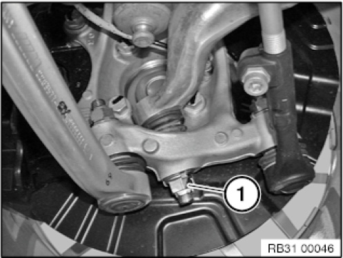
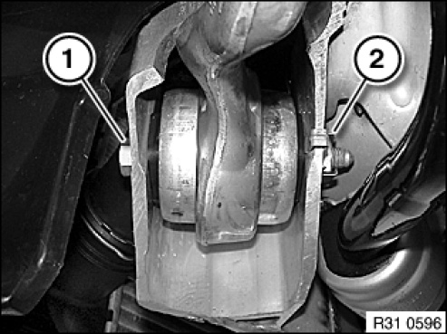

<!DOCTYPE html>
<html>
  <head>
    <title>31 12 080 Removing and Installing/Replacing Both Tension Struts — 2011 BMW 128i Coupe (E82) L6-3.0L (N52K) Service Manual | Operation CHARM</title>
    <meta name='description' content="Detailed repair manual for the 2011 BMW 128i Coupe (E82) L6-3.0L (N52K).">
    <link rel='stylesheet' href="../style.css">
    <meta name='viewport' content='width=device-width, initial-scale=1.0' />
  </head>
  <body>
    <div class='theme-colors header'>
      <div class='branding'><b>Operation CHARM</b>: Car repair manuals for everyone.</div>
<div class=breadcrumbs><a class='breadcrumb-part' href="../">Home</a> <b>&gt;&gt;</b> <a class='breadcrumb-part' href="../BMW/">BMW</a> <b>&gt;&gt;</b> <a class='breadcrumb-part' href="../BMW/2011/">2011</a> <b>&gt;&gt;</b> <a class='breadcrumb-part' href="../index.html">128i Coupe (E82) L6-3.0L (N52K)</a> <b>&gt;&gt;</b> <a class='breadcrumb-part' href="0.html">Repair and Diagnosis</a> <b>&gt;&gt;</b> <a class='breadcrumb-part' href="0.html#Steering%20and%20Suspension/">Steering and Suspension</a> <b>&gt;&gt;</b> <a class='breadcrumb-part' href="0.html#Steering%20and%20Suspension/Suspension/">Suspension</a> <b>&gt;&gt;</b> <a class='breadcrumb-part' href="0.html#Steering%20and%20Suspension/Suspension/Radius%20Arm/">Radius Arm</a> <b>&gt;&gt;</b> <a class='breadcrumb-part' href="0.html#Steering%20and%20Suspension/Suspension/Radius%20Arm/Service%20and%20Repair/">Service and Repair</a> <b>&gt;&gt;</b> <a class='breadcrumb-part' href="1830.html">31 12 080 Removing and Installing/Replacing Both Tension Struts</a></div></div>
<div class="theme-colors floaty-message lemon-message">
  <b style="font-size: 1.5em; color: gold">Manuals through 2025 now available!</b>
  <br><br>
  Our trusted friends have launched a new website named LEMON, which has newer manuals. It also contains all the CHARM manuals.
  <br><br>
  LEMON is the spiritual successor to  CHARM, I recommend you try it!
  <br><br>
  Link: <a style='white-space: nowrap' href="../missing-page">lemon-manuals.la</a> or <a style='white-space: nowrap' href="../missing-page">lemon-manuals.org.ua</a>
  <br><br>
  (Some people have issue connecting. LEMON is investigating. For now, use Firefox or change your DNS server)
  <br><br>
  Or, hide this message: <a href="../missing-page">temporarily</a> or <a href="../missing-page">permanently</a>
</div>
<div class='main'>
<h1>31 12 080 Removing and Installing/Replacing Both Tension Struts</h1><br><br><b>31 12 080 Removing and installing/replacing both trailing links</b><br><br><br><div class='oxe-image'></div><br><br><br><br><br><b>NOTE:</b>  Procedure (except for M models) is described in the document "Removing and installing/replacing trailing link on the left or right".<br><br><br><div class='oxe-image'></div><br><br><br><br><br><b>IMPORTANT:</b>  On M models replace trailing links in pairs.<br><br><br><div class='oxe-image'></div><br><br><br><br><br><b>Necessary preliminary tasks:</b><br><span class='indent-2'>&#09;</span>-<span class='indent-5'>&#09;</span>Remove front underbody protection.<br><br><br><div class='oxe-image'></div><br><br><br><br><br>Release nut (1), if necessary, grip at inner Torx socket.<br>Tightening torque 31 12 2AZ.<br><br>Installation note:<br>Keep tension strut to swivel bearing connection clean and free from oil and grease.<br>Replace self-locking nut.<br><br><br><div class='oxe-image'></div><br><br><br><br><br>Release bolt (1) and remove tension strut.<br>Tightening torque 31 12 1AZ<br>Raise locking nut (2) at area of bore and pull off from front axle support.<br><br>Installation note:<br>Replace locking nut.<br>Tighten down screw connection in normal position.<br><br><br><h3>�\�:</h3><div class='oxe-image'></div><br><br><br><br><br><h3>�&deg;�:</h3><div class='oxe-image'></div><br><br><br><br><br><h3>� �:</h3><div class='oxe-image'></div><br><br><br><br><br><h3>0{�:</h3><div class='oxe-image'></div><br><br><br><br><br><h3>s��:</h3><div class='oxe-image'></div><br><br><br><br><br><h3>50�:</h3><div class='oxe-image'></div><br><br><br></div>
<div class="theme-colors footer">
  <i>pro multis</i> · <a href="../about.html">About Operation CHARM</a>
</div>
<script src="../script.js"></script>
</body>
</html>
